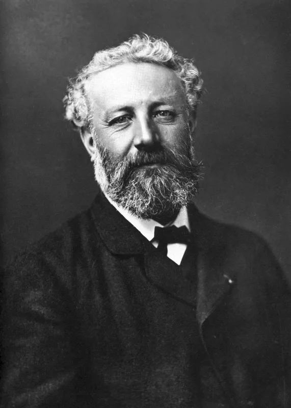
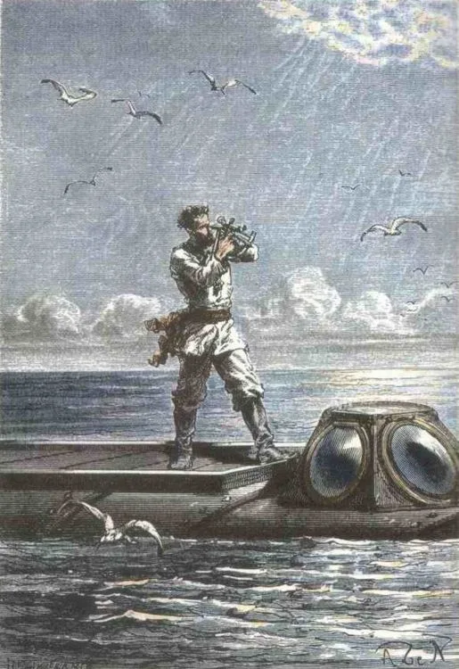
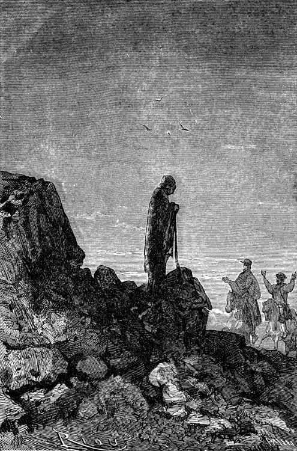
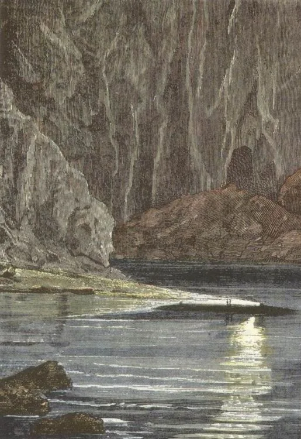

Language, Media & Critical Thinking · Speculative Science & Wonder
Jules Verne
The Architect of Scientific Wonder: where Victorian thermodynamics, submarine ballistics, and celestial navigation became prophecy.
Before Jules Verne (1828–1905), adventure fiction was made of supernatural curses, lost fairy kingdoms, and mythical monsters. Verne dismantled that tradition. He insisted that the wildest romance could be built upon strict mathematics, thermodynamics, geological surveys, and chemistry notebooks. In doing so, he invented the modern scientific imagination—predicting electric submarines, lunar orbital missions, elevated city transit, and global communication networks decades before their realization.
Voyages extraordinairesScientific ExtrapolationCaptain Nemo & The NautilusApollo 11 ParallelsTechnological Hubris

Jules Verne (1828–1905)
Portrait by legendary French photographer Félix Nadar (1878). Nadar himself—a pioneering balloonist, caricaturist, and aeronautical experimenter—was the inspiration for Verne’s fearless explorer Michel Ardan in From the Earth to the Moon.
Photograph by Félix Nadar, 1878. Public domain / Bibliothèque nationale de France.
Learning Tracks
Grades 6–8: Scientific Journeys, Geography, Mechanical Ingenuity & The 80 Days Date LineGrades 9–12: Industrial Optimism, The Ethics of Nemo’s Sanctuary & The Limits of Human Mastery
Interactive Exploration
The Verne Engineering & Prophecy Lab
Test Verne’s 19th-century calculations against modern 21st-century aerospace, oceanography, and geophysics.
Science Extrapolation Engine
Verne consulted physicists, mathematicians, and hydrographers. Toggle between his four major speculative machines and journeys to inspect how his equations hold up against today's realities.
The Nautilus: Electricity as Master Energy
Twenty Thousand Leagues Under the Sea (1870) · Ocean Engineering
Prophetic Foresight95%
Thermodynamic & Physical Rigor82%
Verne's 19th-Century Formulation
Power System: Bunsen sodium-mercury batteries extracting sodium directly from seawater. Double-hull steel cigar, compressed air tanks for breathing, ballast tanks emptied by electric pumps, and an underwater observation salon with electric searchlights.
21st-Century Reality
USS Nautilus (1954): The world’s first nuclear-powered submarine, named in direct tribute to Verne’s vessel. Modern submersibles utilize electrolysis to generate oxygen from seawater and air scrubbers to absorb CO₂, exactly fulfilling Nemo’s self-contained ecosystem.
The Teaching Point: While contemporaries wrote about sea serpents, Verne visited the 1867 Paris Exposition to study the French submarine Plongeur (designed by Bourgois and Brun). He realized that steam power was useless underwater without oxygen; electricity was the only viable power source. Nemo's famous motto, Mobilis in mobili ("Moving within the moving element"), turned technical engineering into a philosophy of total human freedom.
Biographical Foundations
A Mind Tuned to the Horizon
From the Atlantic port of Nantes to the Paris stock exchange, Verne channeled the industrial revolution into literature.
1828 – 1848
Nantes & The Call of the Sea
Born on Île Feydeau in the bustling port of Nantes, Verne grew up watching masted merchant vessels return with cargo from the Americas, Africa, and Asia. Family legend tells that at age eleven he ran away to serve as a cabin boy on the three-masted ship Coralie bound for the West Indies, only to be intercepted by his father at Paimboeuf and forced to promise to “travel only in my imagination.”
1848 – 1862
Paris, Stockbroker & The Library
Sent to Paris to study law like his father, Verne was drawn instead to theater, befriending Alexandre Dumas and writing operettas. To support his young family, he took a demanding job as a stockbroker at the Paris Bourse. Yet every morning from five to ten o’clock, he devoured scientific journals, geography treatises, and engineering papers at the Bibliothèque nationale.
1862 – 1886
Hetzel & The Golden Series
In 1862, visionary publisher Pierre-Jules Hetzel recognized Verne’s genius upon reading Five Weeks in a Balloon. Hetzel signed him to an unprecedented contract: two volumes a year for the Magasin d'éducation et de récréation. Together they launched the Voyages extraordinaires—a systematic literary mission to map the known globe, the deep oceans, the earth’s crust, and outer space.
1886 – 1905
Amiens & The Darkening Horizon
In 1886, Verne survived being shot in the leg by his mentally ill nephew Gaston, leaving him permanently disabled. Moving to Amiens, where he served on the town council, his optimism darkened. Later works questioned corporate greed, military industrialism, and scientific megalomania (such as the mad weapon-maker in Facing the Flag), warning against science unmoored from conscience.
Iconic Visual Records & Hetzel Engravings

Captain Nemo with Sextant (1871)
Engraving by Alphonse de Neuville from the original Hetzel edition of Twenty Thousand Leagues Under the Sea. Captain Nemo calculates the Nautilus’s exact position using classic astronomical navigation, embodying the Victorian fusion of maritime skill and high technology.
Illustrated by Alphonse de Neuville & Édouard Riou, 1871. Public domain.

The Central Sea on the Raft (1864)
Édouard Riou’s famous illustration for Journey to the Center of the Earth. Axel, Professor Lidenbrock, and Hans sail across the subterranean Lidenbrock Sea beneath a granite vault illuminated by electric luminous vapors, encountering giant Lycoperdon fungi and prehistoric ichthyosaurs.
Illustrated by Édouard Riou, 1864. Public domain.

The Underwater Forest of Crespo (1871)
Engraving by Alphonse de Neuville. Verne equipped his divers with Rouquayrol-Denayrouze apparatus (the historical precursor to modern SCUBA invented in 1865) and Ruhmkorff electric lamps, allowing them to hunt and walk freely on the ocean bed.
Illustrated by Alphonse de Neuville, 1871. Public domain.
Core Philosophy & Literary Theory
Le Roman de la Science: Imagination Grounded in Law
Why Verne rejected magical fantasy in favor of disciplined scientific extrapolation.
When later critics compared Jules Verne to H.G. Wells (the author of The Time Machine and The War of the Worlds), Verne vigorously defended his method. Wells, Verne argued, invented imaginary metals like "Cavorite" that defied gravity out of thin air. Verne refused to do this. He said: “I make use of physics. He invents. A time machine! When I send my adventurers to the Moon, I send them in a projectile fired by a cannon. There is nothing in that that is contrary to the laws of physics!”
Disciplinary Rigor
Factual Extrapolation
The Method: Every vehicle, chemical reaction, and expedition begins with real engineering patents and peer-reviewed papers. Verne collaborated with his mathematician cousin Henri Garcet to verify escape velocities and orbital trajectories before writing a single line of dialogue.
Moral Conflict
Captain Nemo's Paradox
The Dilemma: Nemo achieves absolute technological supremacy, yet his soul is consumed by bitterness against colonial oppression. Technology gives him supreme power over the oceans, but cannot heal his grief or cure his desire for revenge.
Educational Goal
Wonder as Teacher
Hetzel’s Mission: The Voyages extraordinaires were designed to teach young people geography, physics, biology, and astronomy through nail-biting suspense. Readers mastered ocean currents and celestial mechanics because their heroes’ lives depended on them.
« La mer est tout ! Elle couvre les sept dixièmes du globe terrestre. Son souffle est pur et sain. C’est l’immense désert où l’homme n’est jamais seul, car il sent frémir la vie à ses côtés. »
“The sea is everything! It covers seven tenths of the terrestrial globe. Its breath is pure and healthy. It is an immense desert where man is never alone, for he feels life quiver on all sides of him.” — Captain Nemo, Twenty Thousand Leagues Under the Sea (1870), Chapter X
Worldview Connection: Stewardship, Dominion & The Tower of Babel
Verne captures the God-given human calling to explore, name, and understand the created order (Genesis 1:28, Genesis 2:19-20). The wonders of ocean depths and orbital mechanics declare the glory of God (Psalm 19:1, Psalm 104:24-25). Yet Verne also saw what happens when technical power becomes an idol. Like the builders of the Tower of Babel (Genesis 11:1-9) or Captain Nemo sinking naval frigates in fury, humanity’s brilliant machines cannot redeem human hearts. Discuss: where does scientific exploration honor God’s creation, and where does technological pride become a dangerous substitute for humility and moral accountability?
Literary Canon & Close Reading
The Major Voyages: An Annotated Compendium
Explore Verne’s greatest masterpieces through narrative architecture, scientific puzzles, and moral inquiries.
Twenty Thousand Leagues Under the Sea (Vingt Mille Lieues sous les mers)
Published 1870 · Oceanic Exploration & Political Resistance
« Vous êtes venu dans le sanctuaire de mon indépendance ! Vous n’en sortirez jamais ! »
“You have stepped into the sanctuary of my independence! You will never leave it!” — Captain Nemo to Professor Aronnax
Narrative Architecture
Told from the perspective of Pierre Aronnax, professor of natural history at the Paris Museum, accompanied by his loyal servant Conseil and Canadian harpooner Ned Land. Captured aboard the mysterious submarine Nautilus, they journey 20,000 leagues (approx. 80,000 km) beneath all oceans, encountering pearl fisheries, hydrothermal coral, giant squids, and the lost ruins of Atlantis.
The Critical & Scientific Inquiry
Is Nemo a heroic liberator or an unhinged pirate? Beneath his cultured demeanor—playing Bach on his pipe organ and funding Greek revolutionaries with sunken Spanish gold—lies an obsession with revenge against an unnamed imperial power that destroyed his homeland and family.
Journey to the Center of the Earth (Voyage au centre de la Terre)
Published 1864 · Geophysics, Paleontology & Cryptography
« Descends dans le cratère du Sneffels Yocul que l’ombre du Scartaris vient caresser avant les calendes de juillet, voyageur audacieux, et tu parviendras au centre de la Terre ! »
“Descend into the crater of Sneffels Yokul which the shadow of Scartaris caresses before the calends of July, bold traveler, and you will reach the center of the Earth!” — Deciphered runic manuscript of 16th-century alchemist Arne Saknussemm
Narrative Architecture
Professor Otto Lidenbrock, an obsessive Hamburg mineralogist, his anxious nephew Axel, and stoic Icelandic guide Hans Bjelke descend into the dormant volcano Snæfellsjökull in western Iceland. Penetrating hundreds of miles downward, they discover a subterranean biosphere: fossilized forests, immense electrical light displays, and primeval marine reptiles.
The Scientific Inquiry
Verne engaged the premier geological controversy of the 1860s: Is the Earth's interior an incandescent molten liquid (central heat theory), or a cooler, solid rocky mantle with localized volcanic pockets? By sending his explorers through volcanic chimneys to exit via Stromboli in Italy, Verne made geology an epic detective puzzle.
Around the World in Eighty Days (Le Tour du monde en quatre-vingts jours)
Published 1872 · Global Infrastructure, Precision & Time Zones
« Phileas Fogg n’avait pas gagné autre chose dans ce tour du monde ? Rien, dira-t-on ? Rien, soit, si ce n’est une charmante femme, qui le rendit le plus heureux des hommes ! »
“Did Phileas Fogg gain nothing else from this voyage around the world? Nothing, you say? Nothing, perhaps, except a charming wife, who made him the happiest of men!”
Narrative Architecture
Eccentric English gentleman Phileas Fogg wagers £20,000 at the Reform Club that newly completed infrastructure—the Suez Canal (1869), the Great Indian Peninsula Railway, and the First Transcontinental Railroad across America (1869)—allows a person to circumnavigate the globe in exactly 80 days, aided by French valet Jean Passepartout.
The Mathematical Climax
Believing he has arrived in London five minutes too late after being wrongfully arrested by Detective Fix, Fogg shuts himself in his room. Passepartout discovers it is Saturday, not Sunday: by traveling steadily eastward toward the rising sun, Fogg shortened his solar days by four minutes per degree of longitude, gaining a full 24 hours at the International Date Line.
From the Earth to the Moon (De la Terre à la Lune)
Published 1865 · Ballistics, Celestial Mechanics & Space Flight
« Un projectile creux de fonte, pesant vingt mille livres, lancé avec une vitesse initiale de onze mille mètres par seconde, s’échappera de l’attraction terrestre ! »
“A hollow cast-iron projectile, weighing twenty thousand pounds, launched with an initial velocity of eleven thousand meters per second, will escape terrestrial attraction!”
Narrative Architecture
Following the American Civil War, bored artillerymen of the Baltimore Gun Club decide to build a gargantuan 900-foot cast-iron cannon called the Columbiad in Stone’s Hill, Florida. Adventurous Frenchman Michel Ardan convinces them to make the projectile hollow so he, Club President Barbicane, and Captain Nicholl can travel inside.
Astonishing Historical Parallels to Apollo 11
Verne calculated that launch from near the equator gave the projectile maximum boost from Earth’s rotation (choosing Florida, near Cape Canaveral). His crew of three traveled in an aluminum cabin, experienced weightlessness at the gravitational neutral point, orbited the Moon, and splashed down in the Pacific Ocean to be picked up by a U.S. Navy warship.
The Mysterious Island (L'Île mystérieuse)
Published 1875 · Applied Chemistry, Engineering & Redemption
« Avec de la terre, du bois, du fer, de l’eau et de l’air, un ingénieur peut tout faire ! »
“With earth, wood, iron, water, and air, an engineer can do everything!” — Cyrus Smith on Lincoln Island
Narrative Architecture
Five Northern prisoners of war escape Confederate Richmond during the American Civil War in an observation balloon. Blown across the Pacific, they crash on an uncharted island. Guided by civil engineer Cyrus Smith, they recreate industrial civilization from raw elements: pottery, iron smelting, nitroglycerin, and electric telegraph wires.
The Secret Benefactor
Whenever the castaways face impossible catastrophe, a mysterious force saves them. At the climax, they enter a volcanic cavern to discover an aging, dying Captain Nemo inside the Nautilus. Before he dies, Nemo confesses his royal Indian heritage (Prince Dakkar), repents of his violent hatred, and blesses the industrious castaways.
Lexicon & Technical Concepts
Vernian Terminology & Scientific Concepts
The vocabulary that built the lexicon of modern science fiction and engineering.
Mobilis in mobili Latin
MOH-bih-lis in MOH-bih-lee
“Moving within the moving element.” Captain Nemo’s personal motto and the inscription on his silverware, watch, and ship flag, summarizing both the submarine's hydrodynamics and his total independence from terrestrial laws.
Escape Velocity Physics
es-kayp veh-LAH-suh-tee
The minimum speed needed for a non-propelled body to escape gravitational pull without further propulsion. Calculated by Verne as 11,000 meters per second (approx. 11.2 km/s or 25,000 mph)—the exact figure used by modern rocket engineers.
Ballast Tanks Marine Eng.
BAH-lust tanks
Compartments on a vessel that take in water to increase density and submerge, or pump water out with compressed air to decrease density and surface, directly implementing Archimedes’ principle.
International Date Line Cartography
in-ter-NASH-un-ul dayt lyn
The boundary on the 180° meridian where calendar days advance or regress. Traveling east across time zones shortens local days, producing an extra calendar day when completing a full 360° circuit.
Roman de la Science French Lit.
roh-MAHN duh lah see-AHNS
The scientific novel. Verne’s distinct genre where plot conflicts, landscape descriptions, and climaxes are dictated by physical, geological, and biological realities rather than pure fantasy.
Technological Hubris Ethics
tek-nuh-LAH-jih-kul HYOO-bris
Overweening human pride that believes scientific and mechanical power eliminates moral limits, consequences, or the need for divine wisdom.
Seminar Discussions & Writing Inquiries
Classroom Socratic Inquiries
Thought experiments, design challenges, and moral debates for secondary seminars.
Track A · Engineering, Navigation & Narrative Prediction (Grades 6–8)
The Power of the Real: Why did Verne insist on using real mathematics, real geography, and real chemistry instead of inventing magic spells or alien technology? How does having accurate science make a story more exciting to read?
The Lost Day Mystery: Explain in your own words how Phileas Fogg arrived in London thinking he had lost his wager, only to discover he had won. If a spaceship travels around Mars in the opposite direction, what happens to its calendar?
The Castaway Engineer: In The Mysterious Island, Cyrus Smith builds an entire chemical and metallurgical foundry on a deserted island. If your class were marooned on an island today, what three modern technologies could you realistically recreate using only natural materials?
Track B · Technology, Empire & Moral Power (Grades 9–12)
Judging Captain Nemo: Captain Nemo provides gold to oppressed Greek insurgents and frees captured divers from cruel masters, yet he also deliberately rams and sinks a naval warship, drowning its entire crew. Is Nemo a champion of justice, or has his trauma turned him into the very tyrant he despises?
The Prophecy Paradox: Verne predicted Apollo 11’s launch site, crew count, weightlessness, and ocean splashdown 104 years before it occurred. Did Verne simply “guess well,” or did 20th-century NASA engineers shape their designs around the books they read as children?
Science and Conscience: In later novels like Facing the Flag and Paris in the Twentieth Century, Verne became deeply skeptical of blind industrial expansion. Can scientific progress ever outpace moral wisdom? Compare Verne's warnings with biblical accounts of human hubris (e.g. Genesis 11).